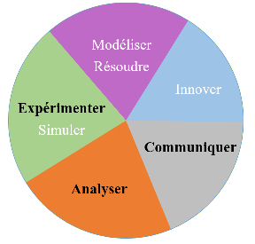

S.I. - S7 - COMMUNIQUER TRAITER
Page optimisée pour Firefox -------------------------------- AC@NDSF

Les objectifs
Les notions ci-dessous doivent être présentées sous un format HTML.
Documents associés
Les compétences de communication
- Collecter et extraire des données
- Comparer, traiter, organiser et synthétiser les informations pertinentes
- Adapter sa communication au public visé et sélectionner les informations à transmettre
- Scénariser un document suivant le public visé